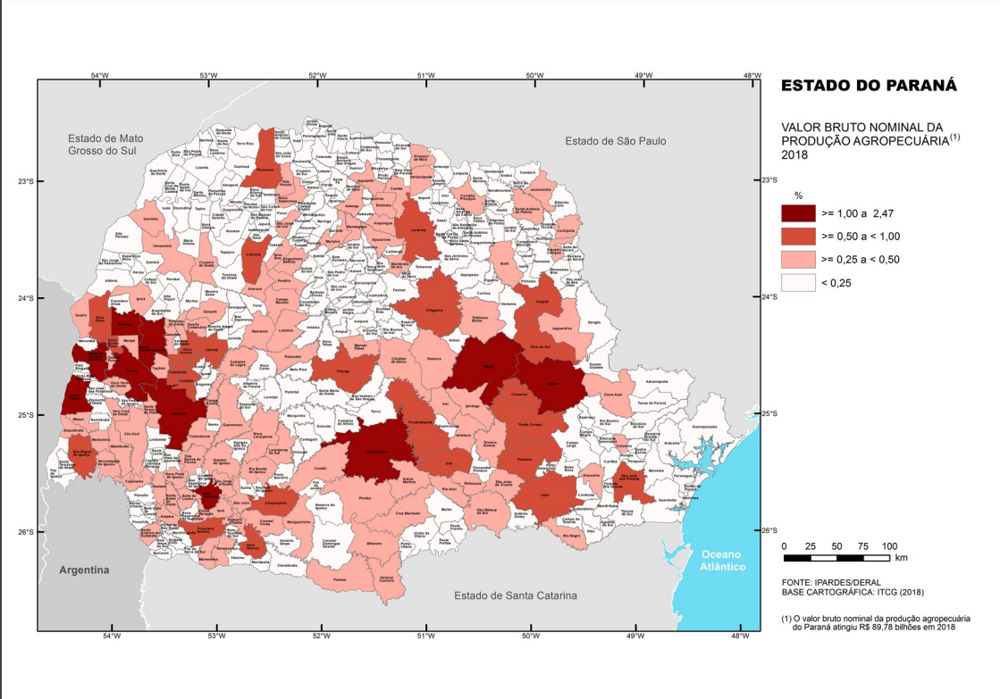
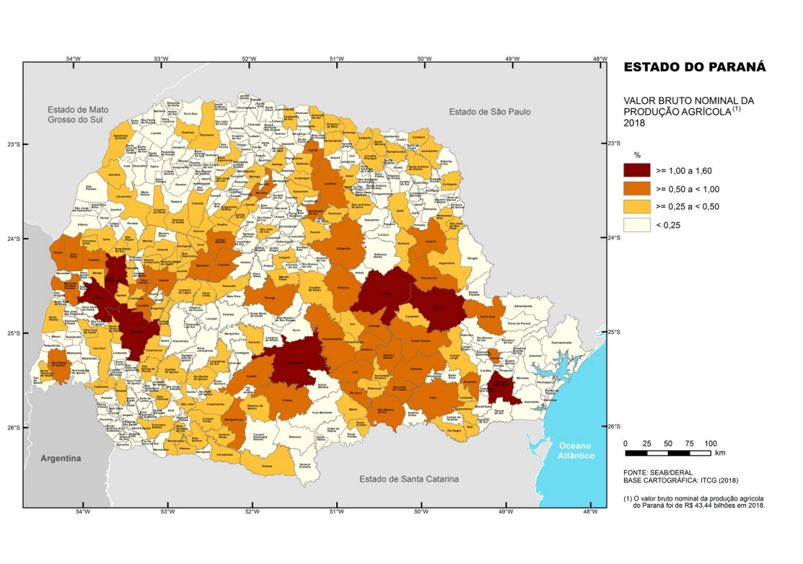
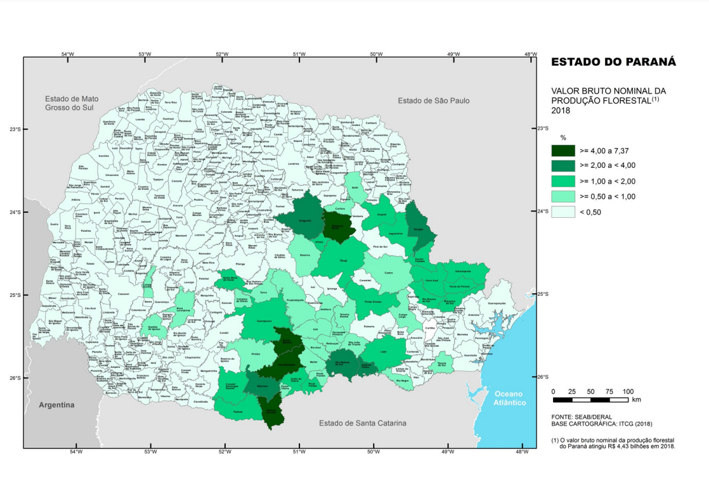
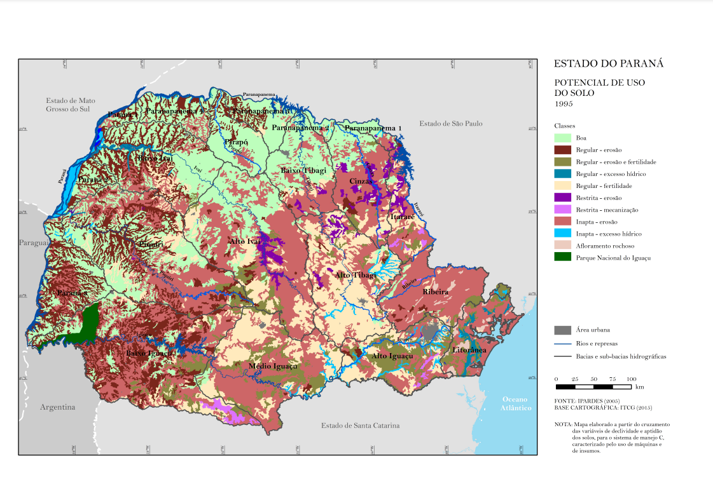
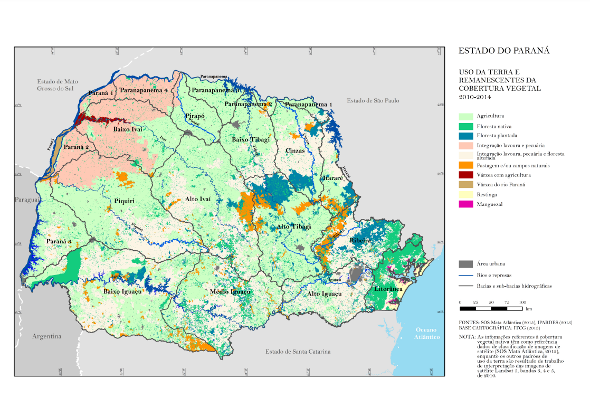
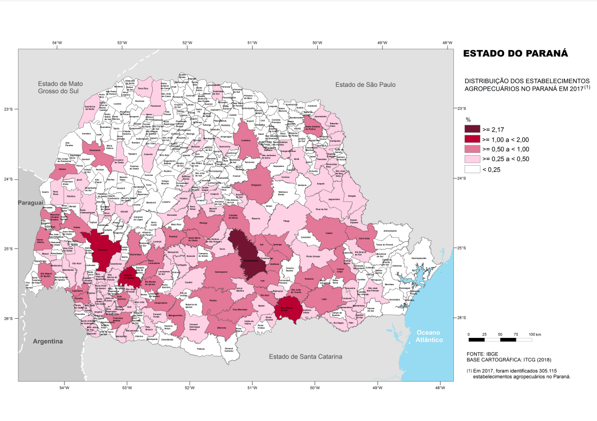

temas
dados do estado

agricultura
"O que é agricultura?
O termo agricultura quer dizer “arte de cultivar”. É o conjunto de técnicas concebidas para cultivar a terra a fim de obter produtos dela. Os produtos da agricultura são primariamente os alimentos, contudo, com os avanços nas técnicas e na tecnologia, a agricultura tem servido cada vez mais ao fornecimento de gêneros para a produção de fibras, energia, matéria-prima para roupas, combustível, construção, medicamentos, ferramentas, ornamentação e inúmeras outras finalidades. Esses produtos, bem como os métodos agrícolas utilizados, podem variar de uma parte do mundo para outra."
"Origem da agricultura?
A agricultura marcou o início do sedentarismo humano e está essencialmente ligada ao surgimento dos primeiros aglomerados humanos e às primeiras civilizações. Antes da universalização da agricultura, as pessoas passavam a maior parte de suas vidas em tarefas que envolviam a caça e coleta de frutos e plantas para a alimentação.
Cerca de 11.500 anos atrás, os seres humanos, gradualmente, aprenderam a cultivar cereais e tubérculos e, assim, puderam fixar-se em um único lugar e estabelecer uma vida baseada na agricultura. No mesmo período, também se iniciou a pecuária, com a gradual domesticação e criação de animais, que até então eram selvagens. As primeiras civilizações baseadas na agricultura intensiva surgiram nas proximidades dos rios Tigre e Eufrates, na Mesopotâmia (atual Iraque e Irã), e ao longo do rio Nilo, no Egito.
Agricultura extensiva e intensiva
Os sistemas de produção utilizados para o desenvolvimento da agricultura podem ser classificados, de modo geral, em dois tipos: a extensiva e a intensiva.
Essas diferenças se baseiam no tamanho da propriedade, da área em cultivo, dos investimentos, das técnicas e das formas de utilização da mão de obra no serviço.
A agricultura extensiva é praticada em grandes extensões territoriais, nas quais se utiliza técnicas rudimentares e tradicionais para o manuseio da terra, o incremento de aparatos tecnológicos é baixo, e as vezes inexiste, não há uso de insumos para preparações e correções de solo, por exemplo. Devido ao pequeno uso de técnicas modernas para o cultivo, a sua produtividade é baixa, ficando em desvantagem no mercado. É comum em países em desenvolvimento e com baixo desenvolvimento econômico.
A agricultura intensiva é praticada em áreas de alto valor comercial, tal qual há um maior investimento na produção, para uma maior produtividade e maior rentabilidade do uso do solo. Essa agricultura se caracteriza pelo alto uso de tecnologias nos meios de produção, como os maquinários, tratores, arados mecanizados, assim como o uso de pesticidas, insumos para o solo, entre outros. A utilização de meios tecnológicos, biotecnologias, fertilizantes químicos, aumentam a produtividade, aumentando a vantagem dessa agricultura no mercado. É comum em países com alto desenvolvimento econômico.